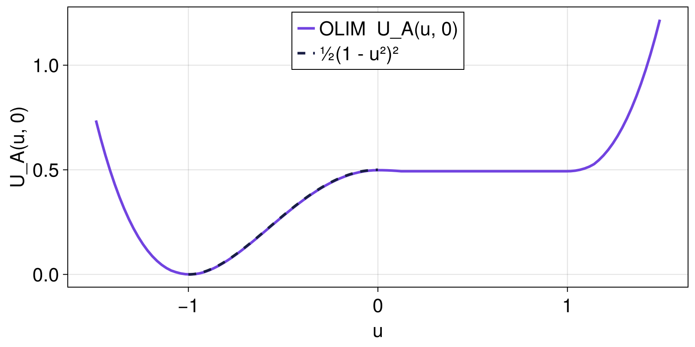
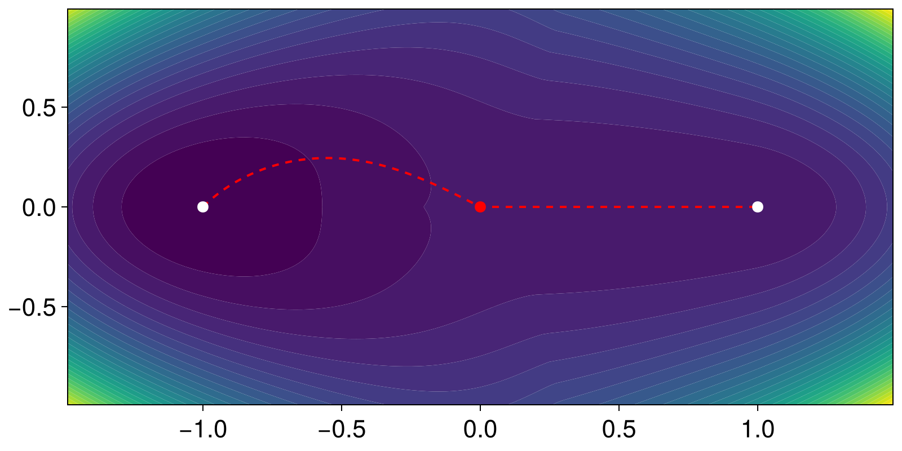

Quasipotential of the Maier-Stein model
using CriticalTransitions
using CairoMakieThe Freidlin-Wentzell quasipotential $U_A(x)$ measures the minimal action of the path connecting an attractor $x_A$ to a point $x$ in the small-noise limit. It controls the exponential rate of escape from $x_A$ and, for non-gradient drift, replaces the usual potential as the relevant Lyapunov function for the deterministic flow plus noise.
The Ordered Line Integral Method (Dahiya and Cameron 2018) computes $U_A(x)$ on a Cartesian grid in a single Dijkstra-style sweep. We apply it to the non-gradient Maier-Stein drift
\[\begin{aligned} \dot{u} &= u - u^3 - \beta\, u v^2 \\ \dot{v} &= -(1 + u^2) v \end{aligned}\]
the standard nongradient benchmark in the large-deviations literature. For every $\beta > 0$ the system has two stable fixed points at $(\pm 1, 0)$ and a saddle at the origin; the saddle value of $U_A$ is the Freidlin-Wentzell barrier between the wells.
maierstein(β) = (x, p, t) -> SVector(x[1] - x[1]^3 - β * x[1] * x[2]^2, -(1 + x[1]^2) * x[2])
grid = CartesianGrid((-1.5, 1.5, 121), (-1.0, 1.0, 121))CartesianGrid{2, Float64}((121, 121), (0.024793388429752067, 0.01652892561983471), (LinRange{Float64}(-1.487603305785124, 1.487603305785124, 121), LinRange{Float64}(-0.9917355371900827, 0.9917355371900827, 121)), (LinRange{Float64}(-1.5, 1.5, 122), LinRange{Float64}(-1.0, 1.0, 122)))An exact reference value
On the invariant $u$-axis ($v = 0$) the drift collapses to the gradient system $\dot u = u - u^3$ with potential $V(u) = -u^2/2 + u^4/4$. As long as the minimum-action path stays on the axis, the quasipotential is therefore known in closed form,
\[U_A(u, 0) = 2\,\bigl(V(u) - V(-1)\bigr) = \tfrac{1}{2}(1 - u^2)^2 ,\]
with a barrier $U_A(0,0) = 1/2$ that is independent of $\beta$. This holds while $\beta$ stays below the focusing threshold $\beta_c = 4$ (Maier and Stein 1993); above it the optimal escape path bows off the axis and $U_A$ is no longer differentiable.
We validate the solver against this exact value at $\beta = 2$:
saddle = CartesianIndex(argmin(abs.(grid.centers[1])), argmin(abs.(grid.centers[2])))
sys = CoupledSDEs(maierstein(2.0), [-1.0, 0.0]; noise_strength = 0.3)
qp = quasipotential(sys, grid, [-1.0, 0.0])
qp.U[saddle] # ≈ 0.50.4982842807195484Overlaying the computed on-axis profile $U_A(u, 0)$ (the $v = 0$ row) on the closed form confirms the match on the source side $u \in [-1, 0]$. Past the saddle the system descends deterministically for free, so $U_A$ stays flat at $1/2$ and the formula (dashed) no longer applies:
us = grid.centers[1]
jaxis = saddle[2] # grid row closest to v = 0
fig, ax, _ = lines(us, qp.U[:, jaxis]; label = "OLIM U_A(u, 0)", axis = (; xlabel = "u", ylabel = "U_A(u, 0)"))
uleft = range(-1, 0; length = 100)
lines!(ax, uleft, @. (1 - uleft^2)^2 / 2; linestyle = :dash, label = "½(1 - u²)²")
axislegend(ax; position = :ct)
fig
Off-axis regime $\beta = 5$
For $\beta = 5 > \beta_c$ the minimum-action path leaves the axis and the barrier drops below $1/2$:
sys = CoupledSDEs(maierstein(5.0), [-1.0, 0.0]; noise_strength = 0.3)
qp = quasipotential(sys, grid, [-1.0, 0.0])
qp.U[saddle] # ≈ 0.4830.4825075360913682There is no closed form in this regime, so we cross-check the saddle value with the geometric minimum action method (minimize_geometric_action). We compute the full transition instanton from one well to the other; the downhill descent into the second well costs no action, so its geometric action equals the saddle barrier. Seeded with a path that bows off the axis, gMAM converges to the same value to three digits:
init = reduce(hcat, [SVector(-1.0 + 2t, 0.4 * sinpi(t)) for t in range(0, 1; length = 200)])
mp = minimize_geometric_action(sys, init; maxiters = 2000)
mp.action # ≈ 0.4830.48303045532369626Contour plot of qp.U, with both attractors marked in white, the saddle in red, and the gMAM instanton (red dashed) overlaid — it leaves the $u$-axis, which is exactly why the barrier falls below $1/2$.
fig, ax, _ = contourf(
qp.grid.centers[1], qp.grid.centers[2], qp.U;
levels = 30, colormap = :viridis,
)
lines!(ax, mp.path[:, 1], mp.path[:, 2]; color = :red, linestyle = :dash, linewidth = 2)
scatter!(
ax, [-1.0, 1.0, 0.0], [0.0, 0.0, 0.0];
color = [:white, :white, :red], markersize = 14,
)
fig
This page was generated using Literate.jl.